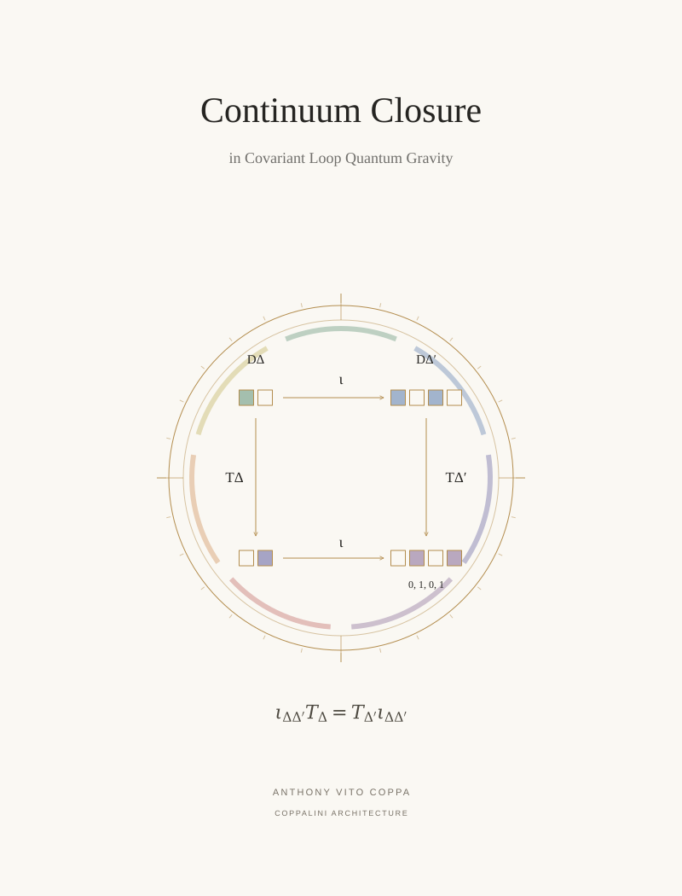

P 03 / Principal paper / COVER ARTWORK
Continuum Closure in Covariant Loop Quantum Gravity


Two routes through a refinement square give the same four-component result.
P 03 / Principal paper / COVER ARTWORK

Two routes through a refinement square give the same four-component result.